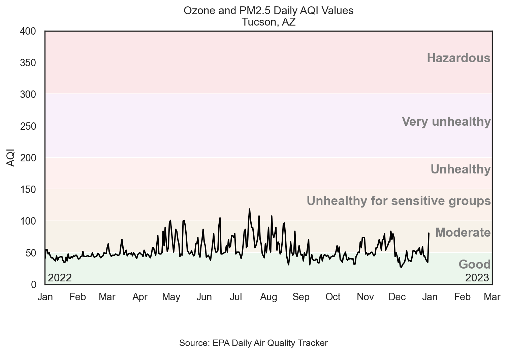
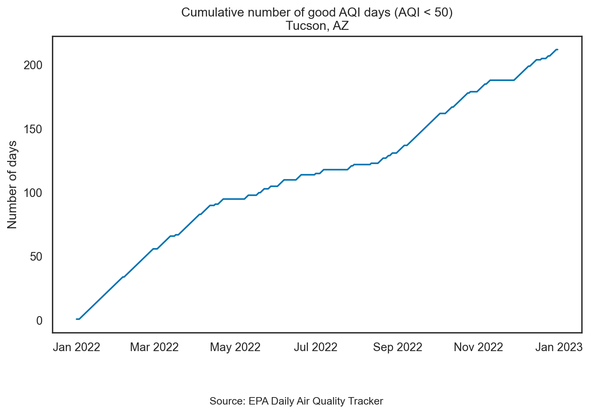
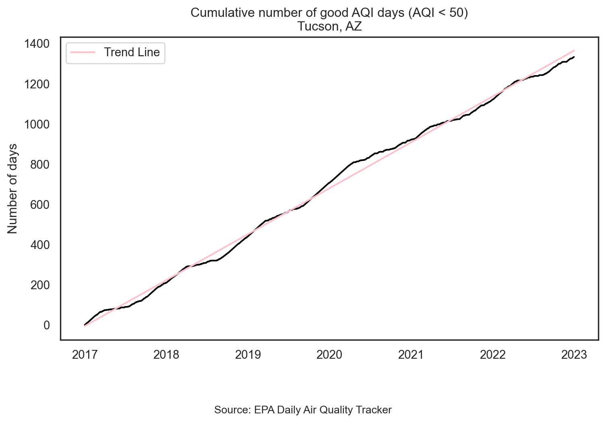
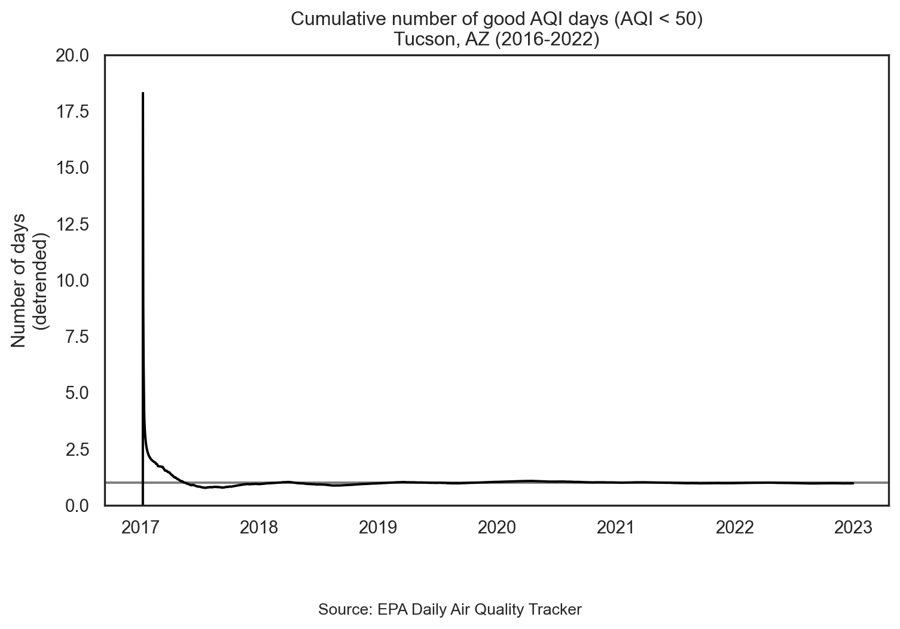
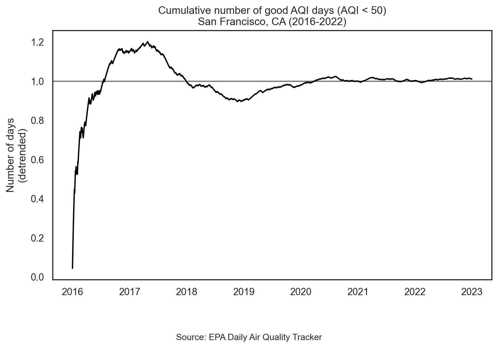

import pandas as pd
import numpy as np
import seaborn as sns
import matplotlib.pyplot as plt
from matplotlib.dates import DateFormatter
import matplotlib.dates as mdates
from janitor import clean_names
# Set the theme for seaborn
sns.set_theme(style="white", palette="colorblind")
# Set figure parameters
plt.rcParams['figure.figsize'] = [8, 8 * 0.618]
plt.rcParams['figure.autolayout'] = TrueTime Series Visualizations
INFO Data Visualization and Analysis - Week 4
Dr. Greg Chism
UArizona School of Information
Time Series Visualizations
Setup
Working with dates
Air Quality Index
The AQI is the Environmental Protection Agency’s index for reporting air quality
Higher values of AQI indicate worse air quality

AQI levels
The previous graphic in tabular form, to be used later…
aqi_levels = pd.DataFrame({
'aqi_min': [0, 51, 101, 151, 201, 301],
'aqi_max': [50, 100, 150, 200, 300, 400],
'color': ["#D8EEDA", "#F1E7D4", "#F8E4D8", "#FEE2E1", "#F4E3F7", "#F9D0D4"],
'level': ["Good", "Moderate", "Unhealthy for sensitive groups", "Unhealthy", "Very unhealthy", "Hazardous"]
})
aqi_levels['aqi_mid'] = (aqi_levels['aqi_min'] + aqi_levels['aqi_max']) / 2AQI data
Source: EPA’s Daily Air Quality Tracker
2016 - 2022 AQI (Ozone and PM2.5 combined) for Tucson, AZ core-based statistical area (CBSA), one file per year
2016 - 2022 AQI (Ozone and PM2.5 combined) for San Francisco-Oakland-Hayward, CA CBSA, one file per year
2022 Tucson, AZ
tuc_2022 = pd.read_csv("https://raw.githubusercontent.com/Gchism94/GL-dataviz-lectures/main/slides/data/tucson/ad_aqi_tracker_data-2022.csv")
tuc_2022 = clean_names(tuc_2022).rename(columns={'_aqi_value': 'aqi_value'})
tuc_2022.head()| date | aqi_value | main_pollutant | site_name | site_id | source | 20_year_high_2000_2019_ | 20_year_low_2000_2019_ | 5_year_average_2015_2019_ | date_of_20_year_high | date_of_20_year_low | |
|---|---|---|---|---|---|---|---|---|---|---|---|
| 0 | 01/01/2022 | 40 | PM2.5 | GERONIMO | 04-019-1113 | AQS | 115 | 35 | 62.2 | 01/01/2018 | 01/01/2001 |
| 1 | 01/02/2022 | 55 | PM2.5 | GERONIMO | 04-019-1113 | AQS | 57 | 31 | 43.2 | 01/02/2015 | 01/02/2016 |
| 2 | 01/03/2022 | 55 | PM2.5 | GERONIMO | 04-019-1113 | AQS | 67 | 29 | 43.6 | 01/03/2015 | 01/03/2005 |
| 3 | 01/04/2022 | 48 | PM2.5 | GERONIMO | 04-019-1113 | AQS | 55 | 27 | 40.4 | 01/04/2015 | 01/04/2008 |
| 4 | 01/05/2022 | 50 | PM2.5 | GERONIMO | 04-019-1113 | AQS | 52 | 28 | 36.0 | 01/05/2013 | 01/05/2000 |
<class 'pandas.core.frame.DataFrame'>
RangeIndex: 365 entries, 0 to 364
Data columns (total 11 columns):
# Column Non-Null Count Dtype
--- ------ -------------- -----
0 date 365 non-null object
1 aqi_value 365 non-null int64
2 main_pollutant 365 non-null object
3 site_name 365 non-null object
4 site_id 365 non-null object
5 source 365 non-null object
6 20_year_high_2000_2019_ 365 non-null int64
7 20_year_low_2000_2019_ 365 non-null int64
8 5_year_average_2015_2019_ 365 non-null float64
9 date_of_20_year_high 365 non-null object
10 date_of_20_year_low 365 non-null object
dtypes: float64(1), int64(3), object(7)
memory usage: 31.5+ KB| aqi_value | 20_year_high_2000_2019_ | 20_year_low_2000_2019_ | 5_year_average_2015_2019_ | |
|---|---|---|---|---|
| count | 365.000000 | 365.000000 | 365.000000 | 365.000000 |
| mean | 53.895890 | 83.432877 | 34.095890 | 49.835068 |
| std | 15.886967 | 27.515111 | 5.734905 | 10.732188 |
| min | 27.000000 | 44.000000 | 19.000000 | 33.800000 |
| 25% | 44.000000 | 59.000000 | 31.000000 | 40.800000 |
| 50% | 48.000000 | 77.000000 | 33.000000 | 47.000000 |
| 75% | 61.000000 | 105.000000 | 38.000000 | 57.000000 |
| max | 119.000000 | 161.000000 | 49.000000 | 82.400000 |
First look
This plot looks quite bizarre. What might be going on?
Transforming date
Using pd.to_datetime():
<class 'pandas.core.frame.DataFrame'>
RangeIndex: 365 entries, 0 to 364
Data columns (total 11 columns):
# Column Non-Null Count Dtype
--- ------ -------------- -----
0 date 365 non-null datetime64[ns]
1 aqi_value 365 non-null int64
2 main_pollutant 365 non-null object
3 site_name 365 non-null object
4 site_id 365 non-null object
5 source 365 non-null object
6 20_year_high_2000_2019_ 365 non-null int64
7 20_year_low_2000_2019_ 365 non-null int64
8 5_year_average_2015_2019_ 365 non-null float64
9 date_of_20_year_high 365 non-null object
10 date_of_20_year_low 365 non-null object
dtypes: datetime64[ns](1), float64(1), int64(3), object(6)
memory usage: 31.5+ KB
NoneInvestigating AQI values
- Take a peek at distinct values of AQI
# Check distinct values of aqi_value
distinct_aqi_values = tuc_2022['aqi_value'].unique()
print(distinct_aqi_values)[ 40 55 48 50 45 42 41 38 37 43 44 35 46 52 49 58 64 51
47 61 71 54 77 84 90 67 97 101 87 100 93 53 74 80 105 119
108 94 31 39 34 59 32 28 27 33 36 60 81]"."likely indicatesNA, and it’s causing the entire column to be read in as characters
Rewind, and start over
# Reload data with correct NA values
tuc_2022 = pd.read_csv("https://raw.githubusercontent.com/Gchism94/GL-dataviz-lectures/main/slides/data/tucson/ad_aqi_tracker_data-2022.csv", na_values=[".", ""])
# Clean and transform data again
tuc_2022 = clean_names(tuc_2022).rename(columns={'_aqi_value': 'aqi_value'})
tuc_2022['date'] = pd.to_datetime(tuc_2022['date'], format='%m/%d/%Y')
# Check the structure of the data
print(tuc_2022.info())<class 'pandas.core.frame.DataFrame'>
RangeIndex: 365 entries, 0 to 364
Data columns (total 11 columns):
# Column Non-Null Count Dtype
--- ------ -------------- -----
0 date 365 non-null datetime64[ns]
1 aqi_value 365 non-null int64
2 main_pollutant 365 non-null object
3 site_name 365 non-null object
4 site_id 365 non-null object
5 source 365 non-null object
6 20_year_high_2000_2019_ 365 non-null int64
7 20_year_low_2000_2019_ 365 non-null int64
8 5_year_average_2015_2019_ 365 non-null float64
9 date_of_20_year_high 365 non-null object
10 date_of_20_year_low 365 non-null object
dtypes: datetime64[ns](1), float64(1), int64(3), object(6)
memory usage: 31.5+ KB
NoneAnother look
Visualizing Tucson AQI

Live coding
Setup
import pandas as pd
import numpy as np
import seaborn as sns
import matplotlib.pyplot as plt
from matplotlib.dates import DateFormatter
import matplotlib.dates as mdates
from janitor import clean_names
# Set the theme for seaborn
sns.set_theme(style="white", palette="colorblind")
# Set figure parameters
plt.rcParams['figure.figsize'] = [8, 8 * 0.618]
plt.rcParams['figure.autolayout'] = True
aqi_levels = pd.DataFrame({
'aqi_min': [0, 51, 101, 151, 201, 301],
'aqi_max': [50, 100, 150, 200, 300, 400],
'color': ["#D8EEDA", "#F1E7D4", "#F8E4D8", "#FEE2E1", "#F4E3F7", "#F9D0D4"],
'level': ["Good", "Moderate", "Unhealthy for sensitive groups", "Unhealthy", "Very unhealthy", "Hazardous"]
})
aqi_levels['aqi_mid'] = (aqi_levels['aqi_min'] + aqi_levels['aqi_max']) / 2
tuc_2022 = pd.read_csv("https://raw.githubusercontent.com/Gchism94/GL-dataviz-lectures/main/slides/data/tucson/ad_aqi_tracker_data-2022.csv", na_values=[".", ""])
tuc_2022 = clean_names(tuc_2022)
tuc_2022['date'] = pd.to_datetime(tuc_2022['date'], format='%m/%d/%Y')Reveal below for code developed during live coding session.
Code
# Plot background AQI levels
for _, row in aqi_levels.iterrows():
plt.axhspan(row['aqi_min'], row['aqi_max'], color=row['color'], alpha=0.5, lw=0)
# Plot AQI values
sns.lineplot(data=tuc_2022.dropna(subset=['aqi_value']), x='date', y='aqi_value', linewidth=1.5, color="black")
# Annotate AQI levels
for _, row in aqi_levels.iterrows():
plt.text(pd.Timestamp('2023-02-28'), row['aqi_mid'], row['level'], ha='right', size=14, color='gray', weight='bold')
# Additional annotations and formatting
plt.annotate('2022', xy=(pd.Timestamp('2022-01-15'), 5), size=12, ha='center')
plt.annotate('2023', xy=(pd.Timestamp('2023-02-15'), 5), size=12, ha='center')
plt.xlim(pd.Timestamp('2022-01-01'), pd.Timestamp('2023-03-01'))
plt.ylim(0, 400)
plt.xlabel(None)
plt.ylabel('AQI')
plt.title('Ozone and PM2.5 Daily AQI Values\nTucson, AZ')
plt.figtext(0.5, -0.1, 'Source: EPA Daily Air Quality Tracker', ha='center', size=10)
plt.gca().xaxis.set_major_formatter(DateFormatter('%b'))
plt.gca().xaxis.set_major_locator(mdates.MonthLocator())
plt.show()Calculating cumulatives
Cumulatives over time
When visualizing time series data, a somewhat common task is to calculate cumulatives over time and plot them
In our example we’ll calculate the number of days with “good” AQI (\(\le\) 50) and plot that value on the y-axis and the date on the x-axis
Calculating cumulatives
Step 1. Arrange your data
Calculating cumulatives
Step 2. Identify good days
Calculating cumulatives
Step 3. Sum over time
Plotting cumulatives

sns.lineplot(data=tuc_2022, x='date', y='cumsum_good_aqi')
plt.gca().xaxis.set_major_formatter(DateFormatter("%b %Y"))
plt.xlabel(None)
plt.ylabel("Number of days")
plt.title("Cumulative number of good AQI days (AQI < 50)\nTucson, AZ")
plt.figtext(0.5, -0.1, 'Source: EPA Daily Air Quality Tracker', ha='center', size=10)
plt.show()Detrending
Detrending
Detrending is removing prominent long-term trend in time series to specifically highlight any notable deviations
Let’s demonstrate using multiple years of AQI data
Multiple years of Tucson, AZ data
Reading multiple files
# Define the list of URLs
tuc_files = [
"https://raw.githubusercontent.com/Gchism94/GL-dataviz-lectures/main/slides/data/tucson/ad_aqi_tracker_data-2022.csv",
"https://raw.githubusercontent.com/Gchism94/GL-dataviz-lectures/main/slides/data/tucson/ad_aqi_tracker_data-2021.csv",
"https://raw.githubusercontent.com/Gchism94/GL-dataviz-lectures/main/slides/data/tucson/ad_aqi_tracker_data-2020.csv",
"https://raw.githubusercontent.com/Gchism94/GL-dataviz-lectures/main/slides/data/tucson/ad_aqi_tracker_data-2019.csv",
"https://raw.githubusercontent.com/Gchism94/GL-dataviz-lectures/main/slides/data/tucson/ad_aqi_tracker_data-2018.csv",
"https://raw.githubusercontent.com/Gchism94/GL-dataviz-lectures/main/slides/data/tucson/ad_aqi_tracker_data-2017.csv"
]
# Initialize an empty dataframe
tuc = pd.DataFrame()
# Read and concatenate all data files
for file in tuc_files:
data = pd.read_csv(file, na_values=[".", ""])
tuc = pd.concat([tuc, data], ignore_index=True)
# Clean column names using the clean_names function from the skimpy package
tuc = clean_names(tuc).rename(columns={'_aqi_value': 'aqi_value'})
# Clean and transform data
tuc['date'] = pd.to_datetime(tuc['date'], format='%m/%d/%Y')
tuc = tuc.dropna(subset=['aqi_value'])
tuc['good_aqi'] = np.where(tuc['aqi_value'] <= 50, 1, 0)
tuc = tuc.sort_values('date')
tuc['cumsum_good_aqi'] = tuc['good_aqi'].cumsum()
# Convert date to ordinal for regression
tuc['date_ordinal'] = tuc['date'].apply(lambda x: x.toordinal())
print(tuc.head()) date aqi_value main_pollutant site_name site_id source \
1826 2017-01-01 38 Ozone SAGUARO PARK 04-019-0021 AQS
1827 2017-01-02 40 Ozone SAGUARO PARK 04-019-0021 AQS
1828 2017-01-03 38 Ozone SAGUARO PARK 04-019-0021 AQS
1829 2017-01-04 38 Ozone SAGUARO PARK 04-019-0021 AQS
1830 2017-01-05 32 Ozone SAGUARO PARK 04-019-0021 AQS
20_year_high_2000_2019_ 20_year_low_2000_2019_ \
1826 115 35
1827 57 31
1828 67 29
1829 55 27
1830 52 28
5_year_average_2015_2019_ date_of_20_year_high date_of_20_year_low \
1826 62.2 01/01/2018 01/01/2001
1827 43.2 01/02/2015 01/02/2016
1828 43.6 01/03/2015 01/03/2005
1829 40.4 01/04/2015 01/04/2008
1830 36.0 01/05/2013 01/05/2000
good_aqi cumsum_good_aqi date_ordinal
1826 1 1 736330
1827 1 2 736331
1828 1 3 736332
1829 1 4 736333
1830 1 5 736334 Simple Linear Regression
Plot trend since 2017

sns.lineplot(data=tuc, x='date', y='cumsum_good_aqi', color = 'black')
sns.lineplot(data=tuc, x='date', y='fitted', color='pink', label='Trend Line')
plt.gca().xaxis.set_major_formatter(DateFormatter("%Y"))
plt.xlabel(None)
plt.ylabel("Number of days")
plt.title("Cumulative number of good AQI days (AQI < 50)\nTucson, AZ")
plt.figtext(0.5, -0.1, 'Source: EPA Daily Air Quality Tracker', ha='center', size=10)
plt.show()Detrend
Step 1. Fit a simple linear regression
Detrend
Step 2. Divide the observed value of cumsum_good_aqi by the respective value in the long-term trend (i.e., fitted)
Visualize detrended data

plt.axhline(y=1, color='gray')
sns.lineplot(data=tuc, x='date', y='ratio', color='black')
plt.gca().xaxis.set_major_formatter(DateFormatter("%Y"))
plt.ylim([0, 20])
plt.xlabel(None)
plt.ylabel("Number of days\n(detrended)")
plt.title("Cumulative number of good AQI days (AQI < 50)\nTucson, AZ (2016-2022)")
plt.figtext(0.5, -0.1, 'Source: EPA Daily Air Quality Tracker', ha='center', size=10)
plt.show()Air Quality in Tucson
barely anything interesting happening!
let’s look at data from somewhere with a bit more “interesting” air quality data…
Read in multiple years of SF data
Code
# Define the list of URLs
sf_files = [
"https://raw.githubusercontent.com/Gchism94/GL-dataviz-lectures/main/slides/data/san-francisco/ad_aqi_tracker_data-2022.csv",
"https://raw.githubusercontent.com/Gchism94/GL-dataviz-lectures/main/slides/data/san-francisco/ad_aqi_tracker_data-2021.csv",
"https://raw.githubusercontent.com/Gchism94/GL-dataviz-lectures/main/slides/data/san-francisco/ad_aqi_tracker_data-2020.csv",
"https://raw.githubusercontent.com/Gchism94/GL-dataviz-lectures/main/slides/data/san-francisco/ad_aqi_tracker_data-2019.csv",
"https://raw.githubusercontent.com/Gchism94/GL-dataviz-lectures/main/slides/data/san-francisco/ad_aqi_tracker_data-2018.csv",
"https://raw.githubusercontent.com/Gchism94/GL-dataviz-lectures/main/slides/data/san-francisco/ad_aqi_tracker_data-2017.csv",
"https://raw.githubusercontent.com/Gchism94/GL-dataviz-lectures/main/slides/data/san-francisco/ad_aqi_tracker_data-2016.csv"
]
# Initialize an empty dataframe
sf = pd.DataFrame()
# Read and concatenate all data files
for file in sf_files:
data = pd.read_csv(file, na_values=[".", ""])
sf = pd.concat([sf, data], ignore_index=True)
# Clean column names using the clean_names function from the skimpy package
sf = clean_names(sf).rename(columns={'_aqi_value': 'aqi_value'})
# Clean and transform data
sf['date'] = pd.to_datetime(sf['date'], format='%m/%d/%Y')
sf = sf.dropna(subset=['aqi_value'])
sf['good_aqi'] = np.where(sf['aqi_value'] <= 50, 1, 0)
sf = sf.sort_values('date')
sf['cumsum_good_aqi'] = sf['good_aqi'].cumsum()
# Convert date to ordinal for regression
sf['date_ordinal'] = sf['date'].apply(lambda x: x.toordinal())
print(sf.head()) date aqi_value main_pollutant site_name site_id source \
2191 2016-01-01 32 PM2.5 Durham Armory 37-063-0015 AQS
2192 2016-01-02 37 PM2.5 Durham Armory 37-063-0015 AQS
2193 2016-01-03 45 PM2.5 Durham Armory 37-063-0015 AQS
2194 2016-01-04 33 PM2.5 Durham Armory 37-063-0015 AQS
2195 2016-01-05 27 PM2.5 Durham Armory 37-063-0015 AQS
20_year_high_2000_2019_ 20_year_low_2000_2019_ \
2191 111 10
2192 76 8
2193 66 14
2194 61 9
2195 83 8
5_year_average_2015_2019_ date_of_20_year_high date_of_20_year_low \
2191 39.2 01/01/2000 01/01/2007
2192 36.8 01/02/2005 01/02/2012
2193 38.2 01/03/2004 01/03/2012
2194 30.4 01/04/2008 01/04/2007
2195 26.0 01/05/2001 01/05/2015
good_aqi cumsum_good_aqi date_ordinal
2191 1 1 735964
2192 1 2 735965
2193 1 3 735966
2194 1 4 735967
2195 1 5 735968 Simple Linear Regression
Plot trend since 2016
sns.lineplot(data=sf, x='date', y='cumsum_good_aqi', color = 'black')
sns.lineplot(data=sf, x='date', y='fitted', color='pink', label='Trend Line')
plt.gca().xaxis.set_major_formatter(DateFormatter("%Y"))
plt.xlabel(None)
plt.ylabel("Number of days")
plt.title("Cumulative number of good AQI days (AQI < 50)\nSan Francisco, CA")
plt.figtext(0.5, -0.1, 'Source: EPA Daily Air Quality Tracker', ha='center', size=10)
plt.show()Detrend
Step 1. Fit a simple linear regression
Detrend
Step 2. Divide the observed value of cumsum_good_aqi by the respective value in the long-term trend (i.e., fitted)
Visualize detrended data

plt.axhline(y=1, color='gray')
sns.lineplot(data=sf, x='date', y='ratio', color='black')
plt.gca().xaxis.set_major_formatter(DateFormatter("%Y"))
plt.xlabel(None)
plt.ylabel("Number of days\n(detrended)")
plt.title("Cumulative number of good AQI days (AQI < 50)\nSan Francisco, CA (2016-2022)")
plt.figtext(0.5, -0.1, 'Source: EPA Daily Air Quality Tracker', ha='center', size=10)
plt.show()Detrending
In step 2 we fit a very simple model
Depending on the complexity you’re trying to capture you might choose to fit a much more complex model
You can also decompose the trend into multiple trends, e.g. monthly, long-term, seasonal, etc.
Highlighting
Data prep
date aqi_value main_pollutant site_name site_id \
2191 2016-01-01 32 PM2.5 Durham Armory 37-063-0015
2192 2016-01-02 37 PM2.5 Durham Armory 37-063-0015
1826 2017-01-01 55 PM2.5 San Pablo 06-013-1004
1827 2017-01-02 36 Ozone Patterson Pass 06-001-2005
1461 2018-01-01 87 PM2.5 Oakland West 06-001-0011
1462 2018-01-02 95 PM2.5 Oakland West 06-001-0011
1096 2019-01-01 33 PM2.5 Redwood City 06-081-1001
1097 2019-01-02 50 PM2.5 Livermore 06-001-0007
730 2020-01-01 53 PM2.5 Oakland 06-001-0009
731 2020-01-02 43 PM2.5 Berkeley Aquatic Park 06-001-0013
365 2021-01-01 79 PM2.5 Oakland West 06-001-0011
366 2021-01-02 57 PM2.5 Pleasanton - Owens Ct 06-001-0015
0 2022-01-01 53 PM2.5 Oakland 06-001-0009
1 2022-01-02 55 PM2.5 Livermore 06-001-0007
source 20_year_high_2000_2019_ 20_year_low_2000_2019_ \
2191 AQS 111 10
2192 AQS 76 8
1826 AQS 162 33
1827 AQS 140 21
1461 AQS 162 33
1462 AQS 140 21
1096 AQS 162 33
1097 AQS 140 21
730 AQS 162 33
731 AQS 140 21
365 AQS 162 33
366 AQS 140 21
0 AQS 162 33
1 AQS 140 21
5_year_average_2015_2019_ date_of_20_year_high date_of_20_year_low \
2191 39.2 01/01/2000 01/01/2007
2192 36.8 01/02/2005 01/02/2012
1826 60.6 01/01/2001 01/01/2019
1827 63.2 01/02/2001 01/02/2002
1461 60.6 01/01/2001 01/01/2019
1462 63.2 01/02/2001 01/02/2002
1096 60.6 01/01/2001 01/01/2019
1097 63.2 01/02/2001 01/02/2002
730 60.6 01/01/2001 01/01/2019
731 63.2 01/02/2001 01/02/2002
365 60.6 01/01/2001 01/01/2019
366 63.2 01/02/2001 01/02/2002
0 60.6 01/01/2001 01/01/2019
1 63.2 01/02/2001 01/02/2002
good_aqi cumsum_good_aqi date_ordinal fitted ratio year \
2191 1 1 735964 22.288160 0.044867 2016
2192 1 2 735965 22.861827 0.087482 2016
1826 0 267 736330 232.250591 1.149620 2017
1827 1 268 736331 232.824259 1.151083 2017
1461 0 440 736695 441.639355 0.996288 2018
1462 0 440 736696 442.213023 0.994996 2018
1096 1 589 737060 651.028119 0.904723 2019
1097 1 590 737061 651.601787 0.905461 2019
730 0 843 737425 860.416883 0.979758 2020
731 1 844 737426 860.990550 0.980266 2020
365 0 1070 737791 1070.379314 0.999646 2021
366 0 1070 737792 1070.952982 0.999110 2021
0 0 1282 738156 1279.768078 1.001744 2022
1 0 1282 738157 1280.341746 1.001295 2022
day_of_year
2191 1
2192 2
1826 1
1827 2
1461 1
1462 2
1096 1
1097 2
730 1
731 2
365 1
366 2
0 1
1 2 Plot AQI over years
Highlight specific year (2016)
Code
# Highlight the year 2016
sns.lineplot(data=sf, x='day_of_year', y='aqi_value', color='gray')
sns.lineplot(data=sf[sf['year'] == 2016], x='day_of_year', y='aqi_value', color='red')
plt.xlabel('Day of year')
plt.ylabel('AQI value')
plt.title('AQI levels in SF in 2016\nVersus all years 2016 - 2022')
plt.show()Highlight specific year (2017)
Code
# Highlight the year 2017
sns.lineplot(data=sf, x='day_of_year', y='aqi_value', color='gray')
sns.lineplot(data=sf[sf['year'] == 2017], x='day_of_year', y='aqi_value', color='red')
plt.xlabel('Day of year')
plt.ylabel('AQI value')
plt.title('AQI levels in SF in 2017\nVersus all years 2016 - 2022')
plt.show()Highlight specific year (2018)
Code
# Highlight the year 2018
sns.lineplot(data=sf, x='day_of_year', y='aqi_value', color='gray')
sns.lineplot(data=sf[sf['year'] == 2018], x='day_of_year', y='aqi_value', color='red')
plt.xlabel('Day of year')
plt.ylabel('AQI value')
plt.title('AQI levels in SF in 2018\nVersus all years 2016 - 2022')
plt.show()Highlight any year
Code
# Function to highlight a specific year
def highlight_year(year_to_highlight):
sns.lineplot(data=sf, x='day_of_year', y='aqi_value', color='gray')
sns.lineplot(data=sf[sf['year'] == year_to_highlight], x='day_of_year', y='aqi_value', color='red')
plt.xlabel('Day of year')
plt.ylabel('AQI value')
plt.title(f'AQI levels in SF in {year_to_highlight}\nVersus all years 2016 - 2022')
plt.show()
# Highlight any year
highlight_year(2018)